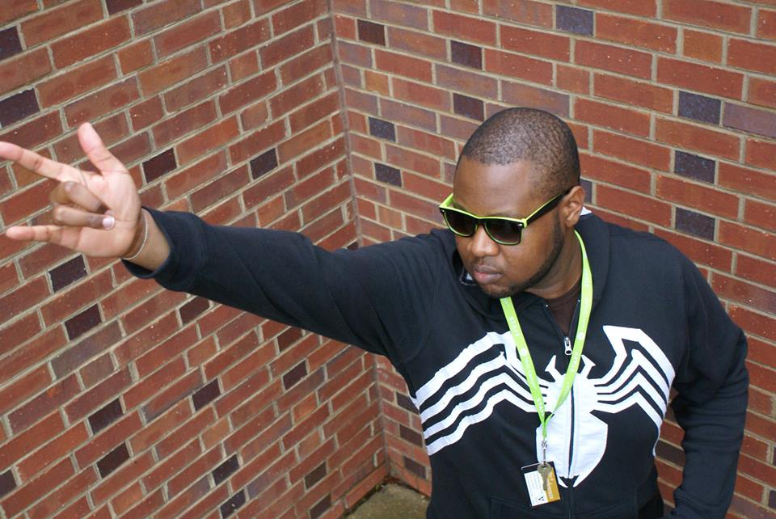

|  | Want to Know About Daniel Jones?Well, Daniel is a busy busy, young man trying to be the very best, like no one ever was!
|
| 3500 John A. Merritt Blvd. | Blog: WayofTheJones.blogspot.com | |||
| Nashville, TN 32079 | Email: danieljonesdev@gmail.com | |||
| Box 7245 | Phone: 731-609-9146 |
Objective: To obtain a position that utilizes and expands my Software Engineering or I.T. skills.